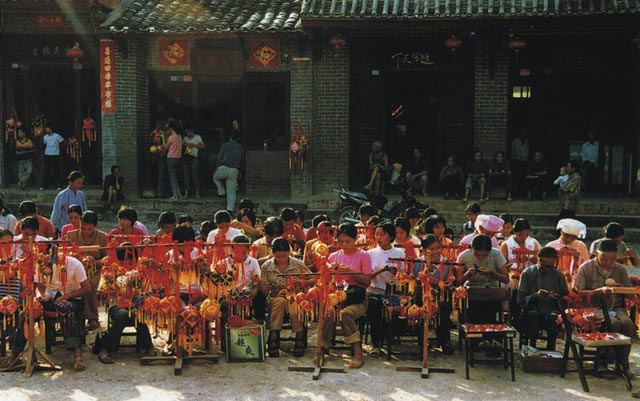
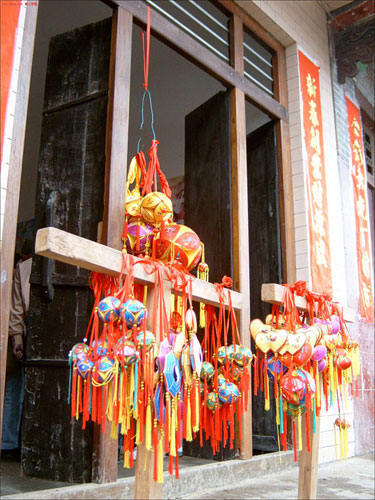
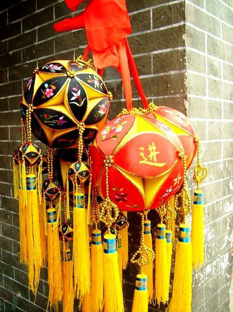
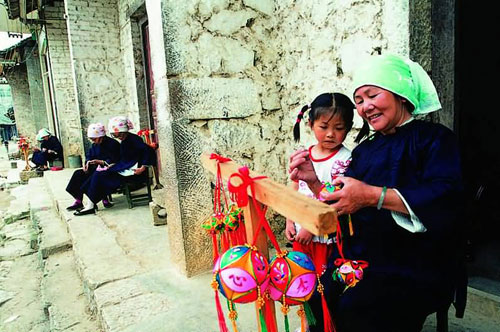

在“2006北京·广西文化舟”期间，绣球成为一个重要的使者，热情的广西人把绣球赠送给每一个前来参加活动的人，五颜六色的绣球拉近了广西人民与首都观众的距离。
提到广西的绣球，就不得不提起靖西旧州，旧州绣球以其制作精巧，色彩斑斓，品种多样而著称于世，旧州街也因此有了“绣球之乡”的美誉。（图为旧州街上的绣球风情。）
“金丝绣球鲜又鲜，千针万线妹手连；哥接绣球胸前挂，条条线把妹心牵。” 绣球是广西壮乡的吉祥物，成为了传递爱情、亲情、友情的民族文化使者，同时也是广西民族民间文化工艺品中的代表。壮族制作绣球的历史十分悠久，宋人周去非在《岭外代答》中记载：“上已日（三月三），男女聚会，各为行列，以五色结为球，歌而抛之，谓之飞陀。男女目成，则女受陀而男婚已定。” 另外，宋代的朱辅在《溪峦丛笑》中也写道：“俗节数日，野外男女分两双朋，各以五色彩囊豆粟，往来抛接。”这里提到的“飞陀”就是后来的绣球，史书中的记载使我们认识到绣球作为男女定情的信物至少在宋代就已经在壮族地区广为流传了。
提到广西的绣球，就不得不提起靖西旧州，旧州绣球以其制作精巧，色彩斑斓，品种多样而著称于世，旧州街也因此有了“绣球之乡”的美誉。绣球讲究手工制作，做工精细，多以红、黄、绿三色做底及面料。一般由12片叶瓣片组成，叶尖对叶尖缝合，整体呈圆形，系有球穗，长约50厘米，球径一般为6-10厘米，最大的30瓣，达2米。在瓣片上，分别绣有龙、凤、孔雀、蝴蝶、金鱼、鸳鸯、菊花、玫瑰、牡丹、兰草、祝词等，一般都是除中间四瓣选材不拘外，其余则要求“上四瓣必挑飞禽，下四瓣须为走兽”。传统的绣球内常填充一些豆粟、棉花籽或稻米等农作物种子，这与壮族是传统的稻作民族有直接的联系，他们通过绣球来表达对丰收、吉祥和人丁兴旺的美好祝愿。

最精美的绣球当首推靖西老艺人采用“堆绣”这一古老而复杂的刺绣工艺制作出的“堆绣绣球”。一般的绣球大都是采用单线刺绣的方式在花瓣的面料上绣出各色图案，花瓣面料上的图案为平面式，线条、色彩如画一般美，同时刺绣方法与过程较为简便；而采用复线刺绣方法的“堆绣绣球”则图形更为精美，图案极为复杂，所勾勒之物栩栩如生，极富立体感，如鲜活之物欲喷薄而出，数绣球中的极品。
在广西还流传着这样一个美丽的爱情故事，诚实勤劳的壮家娃阿弟爱上了邻村美丽善良的姑娘阿秀，后来遭到了恶少的拆散，阿弟被抓到地牢里。苦闷中的阿秀用心血为心上人阿弟缝制绣球。针扎破了手，血流在了绣球上，被血浸染以后，绣球上的花更艳了，叶更绿了，鸟更鲜活了。经过九九八十一天，载满阿秀对阿弟深深的爱恋的绣球做好了。当阿秀将绣球戴在阿弟的脖子上时，只见灵光一闪，阿秀、阿弟和家人便飘然落在远离恶魔的一处美丽富饶的山脚下，从此过上了幸福恩爱的生活。如今，这神奇的绣球已经成为沟通友谊的桥梁，馈赠亲友表达祝福的礼品。
近年来，旧州街的壮族群众充分发挥当地现存古老壮族民间文化资源和地处中越边境的区位优势，开辟文化产业渠道，拓宽民族文化发展空间，不断改进技术，将精美的绣球、壮锦等壮族民间工艺品作为旅游工艺品推向市场，远销欧美、东南亚以及港澳台地区。
小小的绣球记录了壮乡千百年历史，促成了多少美好的姻缘，引出了多少动人的山歌。千百年后的今天，绣球仍然被壮乡人完整的传承下来，作为一种吉祥、一种祝福，送给每一位来到壮家做客的朋友。


